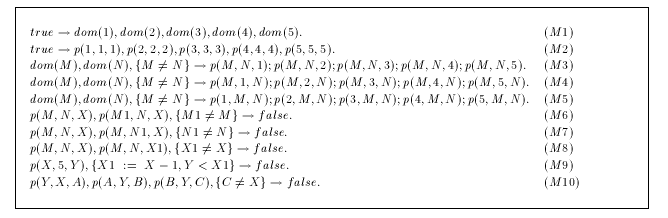
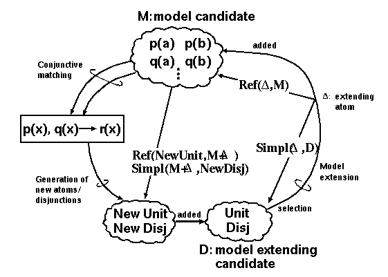
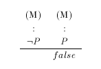
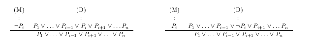
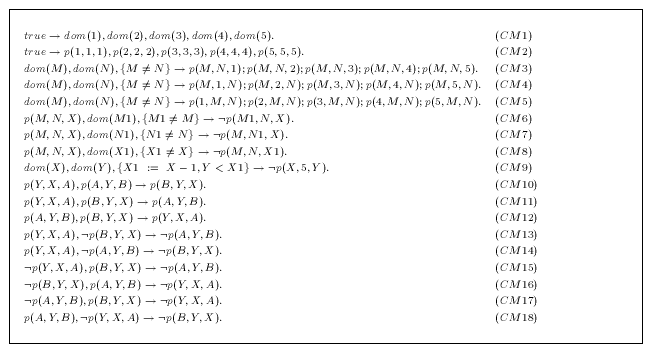

MGTPによって準群問題を解くことの利点は、 問題が一階述語形式で非常に簡潔に書けることである。 たとえばQG5の場合は10個のMG節として表現できる。 以下にQG5のMGTPでの記述例を示す。

一方で、先にも述べたように、MGTPは前向き推論に基づくこと、 また正アトムのみがモデルとして用いられることから、 負の制約伝搬をすることができないという欠点も持っている。 CMGTPではこれらの欠点を補うため、負アトムによる表現を許し、 それらによる候補の枝刈り機能を備えている。
以下にCMGTPのモデル生成プロセスを示す。

ここで、D はモデル拡張候補と呼ばれ、 M はモデル候補と呼ばれる。 これらは、OTTERにおける ``to be given list''と ``has been given list'' にそれぞれ対応するものである。
CMGTPのモデル生成プロセスは、MGTPのモデル生成プロセスに2つの Ref プロセスと2つの Simpl プロセスを新たに付け加えたものである。 MGTPのアルゴリズムについては [][] などを参照されたい。
CMGTPとMGTPの相違は、単位反駁(unit refutation)プロセスと 単位簡約化(unit simplification)プロセスにある。 単位反駁メカニズムにより、 もし、P と ¬P が共に M にあれば、 以下のように false が導出される。

また、もし M の中に ¬Pi (Pi) があり、また D に Pi (¬Pi) を含む選言が存在するならば、 以下に示すような単位簡約化メカニズムによって Pi (¬Pi) はその選言から削除される。

単位簡約化の結果として nil (長さ 0 の選言) が 生成されるときは、false が導出される。
Ref/2 と Simpl/2 は それぞれ上で述べたような単位反駁と単位簡約化を 実行する関数である。 すなわち Ref(U1,U2) は、アトムの集合 U1,U2 に対して あるアトム P∈U1, Q∈U2 があって、 このとき P = ¬Q もしくは Q = ¬P が成り立つ時 false を 返す。 また、Simpl(U,D) は単位節の集合 U に含まれるアトムによって 選言の集合 D を simplify した結果を返すが、 もしこの結果として nil が導出された時は、 Simpl の結果として false を返す。
Ref や Simpl が false を返した時には、現在探索中の 枝は unsat として終了 (terminate) する。 容易にわかるように、アトムは長さ 1 の選言と見ることができるから、 Ref は Simpl の特殊な形ともいえる。
オリジナルのMGTPに追加された単位反駁と単位簡約化のプロセスは 以下の4つである。
CMGTPがとる単位節優先戦略とこれらの関数により、 任意のアトム P ∈ M に対して、 P と ¬Pが現在の M の中に共存しないこと、 また、現在の D に含まれるすべての選言はすでに M 中のすべての単位節によって simplify されていることが保証される。
以下にQG5のオーダ5に対するCMGTPの入力節を示す。

(CM1)から(CM5)はオリジナルのMGTPでのルールと同じである。 (CM6)-(CM9)も同様に準群の定義と同型排除の ヒューリスティックスを表しているが、 条件にあわない候補をあらかじめ否定モデルとして生成するルールに 置き換えられていることに注意されたい。
そして、(CM10)-(CM18)はQG5での制約条件を表現したものとなっているが、 これは、上で示した制約伝搬ルールそのものになっている。 すなわち、準群問題において制約伝搬を 行なうために必要なルールは CMGTPの入力節としてダイレクトに記述することが可能であり、 この意味で、CMGTPは制約伝搬を記述するメタ言語と考えられる。